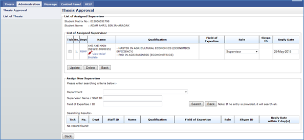

Figure 27: Change Supervisor/Co-Supervisor
Steps:-
- To assign new Supervisor/Co-supervisor, provide the searching criteria and search. The searching can be by individually or combine. The fields are as follow:-
- Department
- Supervisor Name / Staff ID
- Field of Expertise / Expertise ID
- If there is no entry provided, the search will display all the staff.
Figure 82: Search Result with no searching criteria provided
Figure 29: Search Result with searching criteria provided
- Choose the staff that the user wants to assign by ticking the checkbox.
- Then choose the role of the assigned staff whether to be Supervisor or Co-Supervisor.
- Then choose the Reply Date
- Once done, click Assign button.
Figure 210: List of Assigned Supervisor
- If to delete the assigned Supervisor / Co-Supervisor, tick the checkbox and click Delete button to remove the assigned supervisor/co-supervisor from the list.
- To View brief biodata of the staff click
 .
.
- To change the role, choose the Role listed or to change the reply date, choose the Reply Date. Once done click Update button to save it.